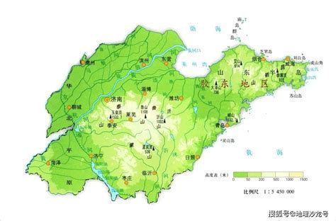
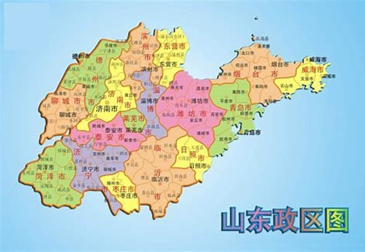

- 好客山东欢迎您！
 
• 山东省位于中国东部沿海、黄河下游，地处北纬34°22′52″至38°15′02″，东经114°19′53″至122°43′之间。全省陆域面积15.81万平方千米（另有说法为15.79万平方公里），毗邻海域面积约为15.86万平方千米或15.95万平方公里，约占全国总面积的1.64%。
• 山东省境域包括半岛和内陆两部分，山东半岛突出于渤海、黄海之中，内陆部分自北而南与河北、河南、安徽、江苏4省接壤。山东省境内中部山地突起，西南、西北低洼平坦，东部缓丘起伏，形成以山地丘陵为骨架、平原盆地交错环列其间的地形大势。泰山雄踞中部，主峰海拔1532.7米，为全省最高点。黄河三角洲一般海拔2~10米，为全省陆地最低处。山地约占全省总面积的15.5%，丘陵占13.2%，平原占55%，洼地占4.1%，湖沼平原占4.4%，其他占7.8%。
• 山东省气候类型属于暖温带季风气候，降水集中，雨热同季，春秋短暂，冬夏较长。年平均气温11℃~14℃，全省气温地区差异东西大于南北。全省光照资源充足，光照时数年均2290~2890小时，热量条件可满足农作物一年两作的需要。 年平均降水量一般在550~950毫米之间，由东南向西北递减。降水季节分布很不均衡，全年降水量有60%~70%集中于夏季，易形成涝灾，冬、春及晚秋易发生旱象。
• 山东省水资源总量仅占全国水资源总量的1.09%，人均水资源占有量334立方米，属于人均占有量小于500立方米的严重缺水地区。山东省矿产资源丰富，现已发现147种矿产资源，查明资源储量的有85种。其中，列全国第1位的矿产资源有金、铪、自然硫、石膏等9种。山东省海洋资源得天独厚，近海海域占渤海和黄海总面积的37%，滩涂面积占全国的15%。近海栖息和洄游的鱼虾类达260多种。
• 山东省地处中国东部的南北交通要道，水陆交通便捷。境内有京沪、京九、胶济等主要铁路干支线，公路四通八达，形成了由铁路、公路、水路、民航等运输方式组成的运输网络。